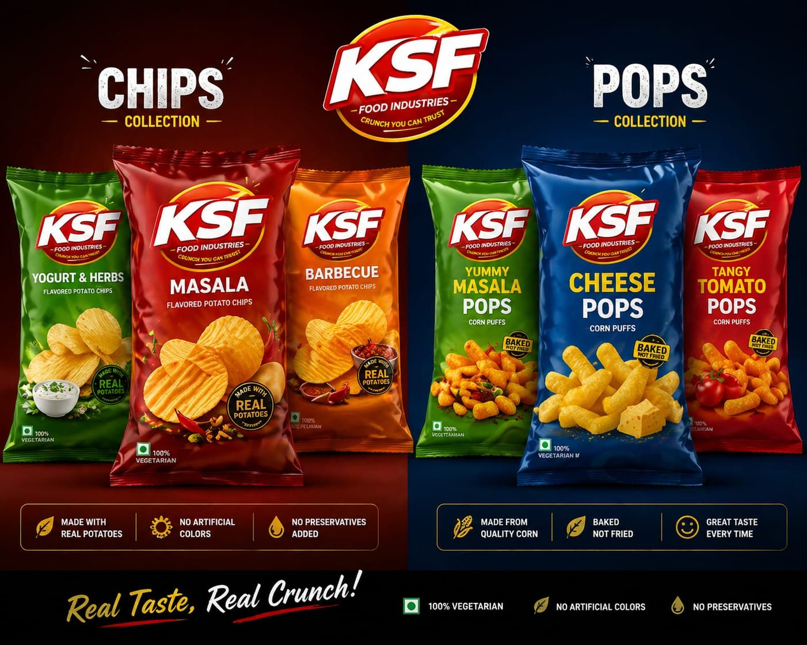

Flavours
Six ways
Six ways
to crunch.
Two collections, six flavours. Potato chips made with real potatoes, and corn pops baked, not fried. All 100% vegetarian, with no artificial colours and no preservatives.

Want KSF on your shelves?
Wholesale cartons, distributor pricing and trade samples are available from our Lahore factory.